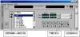

|
|
| 当前位置：电脑报电子版 > 1999 年 > 41 期 > 软件世界 > 免费的组合音响 |
| 《 免费的组合音响 》 |
| 可能你和我一样，非常喜欢收集各种各样的播放器，那么，SuperSonic你一定不能错过！ SuperSonic是一个具备组合音响功能的免费专业化音频软件，但播放效果却完全可与任何一种优秀的播放器相媲美，带给你完美的音乐享受。它由混频器、波谱分析器、峰值分析器、CD播放器、WAV编辑器、无线调谐器等多达13个音频设备（控制面板）组合而成，具备了非常完善的功能，支持包括Audio CD、MP3、WAV、MOD、MIDI等在内的多种26种文件类型，并提供了强大的音频文件管理功能。 SuperSonic的安装很简单，在此需要说明一点：如果你的电脑未安装“无线调谐器”，则在自选安装时可不选择“Radio Tuner Card（optional）”选项。它的操作界面类似Jet－Audio播放器，分为两个部分：主菜单和控制面板，共有13个控制面板。你可以通过在“Devices”菜单或在主窗口中的空白地方，单击鼠标右键选择打开/关闭每一个面板；通过在“System” 菜单→“Preferences”选项中进行各种参数设置（一般无需改动）。 Cdplayer控制面板的操作 将一张CD放入光驱，执行SuperSonic程序，单击Cdplayer控制面板中的“Edit Cd Information”按钮，你可以创建和编辑CD播放列表，完全支持中文。右方的播放按钮中有两个的功能很特别：“Mark Elapsed”和“Return to Mark”按钮，分别用于“作播放标记”和“返回播放标记”，这样你能不厌其烦从CD歌曲的某一点开始反复播放，对于想学唱歌的你真是太方便了（如图）。当Cdplayer控制面板创建了多于一张的CD播放列表后，在下次播放任何一张CD时，它都能智能地弹出相应的CD播放列表，决不出错。 播放MP3歌曲 SuperSonic中没有专门的MP3播放控制面板，而将MP3歌曲的播放功能加入到Waveplayer控制面板中：单击控制面板中的“Open Wave”铵钮，选择MP3文件即可，它支持标准MP3文件的“ID3 TAG”格式。定义好的播放列表可以按照“歌手”→“专辑”→“歌名”的结构保存并显示出来。面板中的“Rate”功能类似另一个优秀的MP3播放器Soritong中的“SPD（播放速度控制）”功能，可随意调节播放速度，以达到“男声变女声”/“女声变男声”的变调效果。 其它控制面板 如“Tuner” 能进行无线电接收调谐功能；“Waveeditor”可进行复杂的WAV文件编辑工作，功能强大；“Disc jockey”使你感受一下虚拟“DJ”的感觉，其余的控制面板的操作与上面介绍的类似，不再一一介绍。SuperSonic不支持多文件和连续文件的选取，不支持标准MP3文件的“＊.M3U”播放列表文件格式；占用比较多的系统资源；最烦人的是每当Win 98系统中安装了虚拟光驱软件之后，再运行它会发生错误，无法正常读取光驱。 SuperSonic虽然有一些缺点，但总的来说还算是一个优秀的播放器和专业音频软件，你只要这样想想：你见过提供类似功能的完全免费的其它的播放器和专业音频软件吗？你可以在《电脑报配套光盘》'99第二期中找到SuperSonic v4.42版，也可以到http://www.gosupersonic.com下载最新版本安装。 （广东 张磊） |
| 下载本期推荐软件 | 页 首 |
| 《电脑报》版权所有，电脑报网站编辑部设计制作发布 |